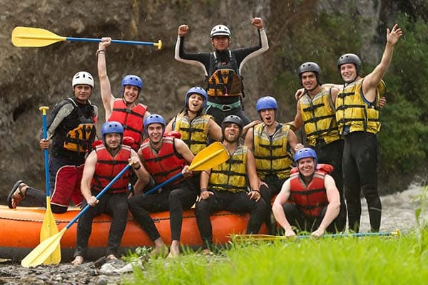

This is one of our most popular destinations. With its choppy waters and waterfalls, it is the
perfect choice for those who love a great adventure.
Geres National Park
Geres has one of the most beautiful and impressive landscapes. For those who love a good thrill
but also an appreciation of nature.

San Jordan
This is the perfect destination for the whole family. It is a mix of our other tours. It is great
fun, but also has calm waters where you can see the local biodiversity.